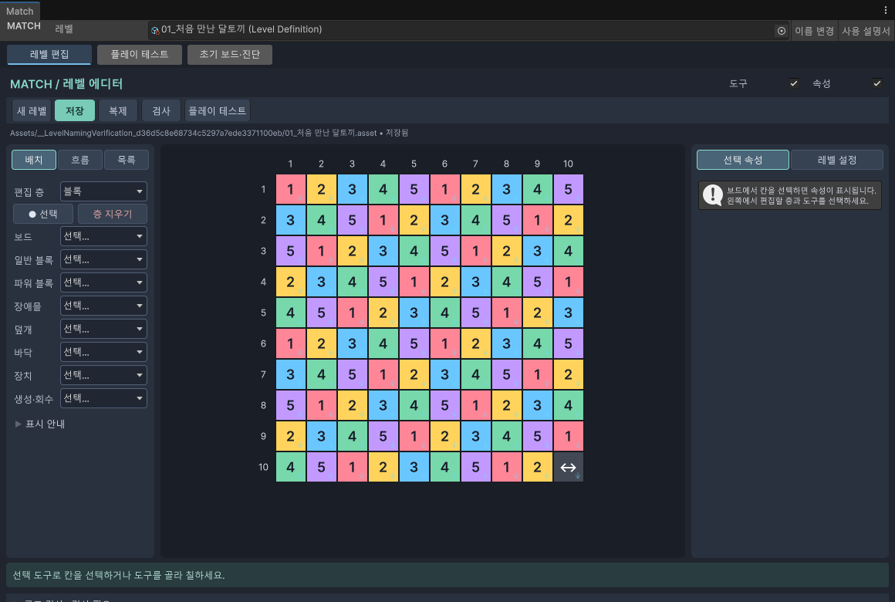

처음 사용하는 분께
시작하기
레벨을 만들고, 직접 플레이하며, 잘못된 설정을 찾아보세요.
시작 전에 프로젝트를 Unity에서 연 뒤 시작합니다.
처음이라면 이 순서로
창 열기
Unity 위쪽 메뉴에서 Match → 통합 작업창을 누릅니다. 이미 열려 있으면 같은 창을 보여줍니다.
Match → 레벨 에디터 / 플레이 테스트 / 초기 보드 확인도 각각 같은 창의 해당 탭을 엽니다. Match → 사용 설명서는 이 설명서를 엽니다.
| 탭 | 하는 일 |
|---|---|
| 레벨 편집 | 블록을 놓고 레벨 조건을 정합니다. |
| 플레이 테스트 | 만든 레벨을 직접 플레이합니다. |
| 초기 보드·진단 | 처음 배치되는 모습과 처리 과정을 자세히 확인합니다. |
화면의 큰 구성

| 위치 | 설명 |
|---|---|
| 맨 위 | 현재 레벨 선택, 이름 변경, 사용 설명서 |
| 왼쪽 | 배치할 도구 선택. 배치 / 흐름 / 목록으로 나뉩니다. |
| 가운데 | 10×10 보드. 위 숫자는 열, 왼쪽 숫자는 행입니다. |
| 오른쪽 | 선택한 칸의 설정 또는 레벨 전체 설정 |
| 아래 | 작업 안내와 구조 검사 결과 |
탭을 바꾸면 어떻게 되나요?
탭을 바꾸어도 선택한 칸, 스크롤 위치, 테스트 진행 상태는 유지됩니다. 떠난 테스트의 자동 처리는 잠시 멈추고, 돌아오면 이어집니다.
다만 원본 레벨을 고치거나 다른 레벨을 선택하면 예전 테스트는 다시 시작해야 합니다. 창을 닫거나 Unity가 스크립트를 다시 읽었을 때도 테스트를 새로 시작합니다.
맵 모양 목록과 ! 도움말
이전: 맵 모양 추천으로 시작 → 현재: 레벨을 저장한 뒤 맵 모양 목록 → 현재 레벨 모양 등록으로 보관합니다. 목록에서 선택하고 확정할 때 새 레벨을 만듭니다. 사용 순서 보기
! 아이콘은 마우스 오버로 설명, 클릭으로 관련 문서 이동입니다.
필요한 설명 바로 찾기
변경 이력
| 변경일 | 변경 항목 | 이전 → 현재 | 이유 |
|---|---|---|---|
| 2026.09.28 | 모양 목록 | 추천 → 등록형 목록 안내 추가 | 사용자 등록 방식 반영 |
| 2026.09.28 | 맵 모양 추천 안내 | 추가 · 왼쪽 목차에 추천 안내 연결 | 추천과 ! 도움말 사용법 안내 |
| 2026.09.28 | 이 페이지 전체 | 추가 · 처음 작성 | 현재 Match 도구를 쉽게 설명 |
설명 편집일: 2026.09.28 · 대상: Windows / Unity 6000.3.10f1
검증 상태: 메뉴·절차 코드 대조, 실제 화면 캡처. 확인 범위 보기